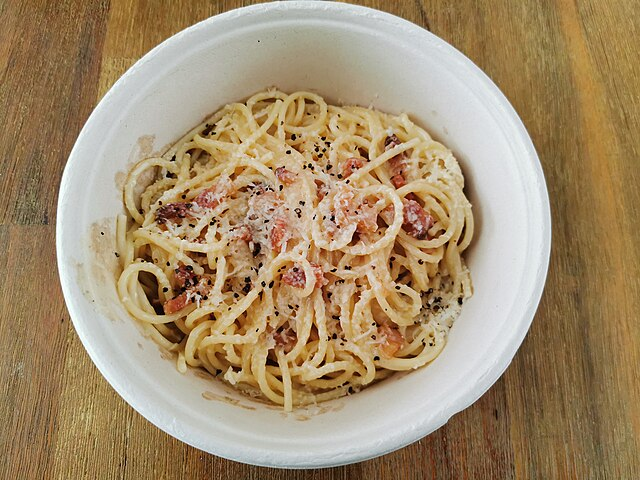

Spaghetti Carbonara

RIch and creamy spaghetti carbonara
Description
Spaghetti Carbonara is a classic Roman pasta dish known for its creamy, savory sauce made without
any actual cream. Traditionally crafted with eggs, Pecorino Romano cheese, pancetta, and freshly
ground black pepper, this dish is rich yet simple, capturing the essence of Italian comfort food.
Its velvety texture and smoky flavor make it a favorite around the world.
Ingredients (serves 4)
- 400g spaghetti
- 150g panchetta, diced
- 4 large eggs
- 100g Pecorino Romano cheese, finly grated
- Freshly ground pepper, to taste
- Salt, for pasta water
Steps
- Bring a large pot of salted water to a boil and cook the spaghetti until al dente.
- While the pasta is cooking, cook the pancetta in a pan over medium heat until crisp.
- In a bowl, whisk together eggs, grated Parmesan, and black pepper.
- Reserve a bit of pasta water, then drain the spaghetti.
- Quickly mix the hot pasta with the pancetta and its rendered fat, then remove from heat.
- Stir in the egg and cheese mixture, adding a little pasta water as needed to create a smooth sauce.
- Serve immediately with extra cheese and a pinch of pepper.
Home